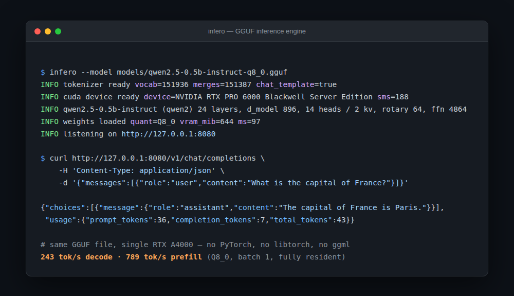

infero
Written in Rust for GGUF, AWQ, and FP8 (W8A8)
checkpoints, with hand-written CUDA and Metal kernels — no PyTorch, no
libtorch, no ggml. The whole path from a model checkpoint on
disk to an OpenAI-compatible HTTP response is in one repository.

# links a CUDA userspace into vendor/
./scripts/setup-cuda.sh
# any GGUF, AWQ, or FP8 checkpoint works
cargo run --release -p infero-server -- --model models/qwen2.5-0.5b-instruct-q8_0.ggufcurl http://127.0.0.1:8080/v1/chat/completions \
-H 'Content-Type: application/json' \
-d '{"messages":[{"role":"user","content":"What is the capital of France?"}]}'The official openai Python SDK works against it unmodified, streaming included.
Sparse-FFN architectures load experts individually — AWQ per expert — and route through a dedicated top-k kernel at decode, counting-sort + per-expert GEMM at prefill.
Qwen3.5-VL-style checkpoints take image_url and video_url content parts, with M-RoPE, chunked vision prefill, and content-aware token pruning for long clips.
A GGUF's embedded or sidecar MTP head drafts k tokens ahead of the main model.
OpenAI-style tools/tool_choice, scanned out of the model's own output and returned as structured tool_calls, streaming included.
Requests share the GPU over a paged KV cache; decodes go first, prefill fills what's left and may split across steps.
Layers stream from page-locked host memory when a model doesn't fit in VRAM — compute never leaves the GPU.
Two properties hold exactly, and are asserted in the tests rather than assumed: a request's logits never depend on which other requests share its batch, and the tensor-core GEMM gives bit-identical results at any batch width — so the vocab projection is invariant to batch size.
Same RTX A4000, one load generator against every engine's OpenAI endpoint, 200 tokens per request at temperature 0. llama.cpp runs the same GGUF file — which is what separates engine quality from quantization format.
| clients | vLLM 0.27.1 (AWQ) | llama.cpp (GGUF) | infero (GGUF) | infero (AWQ) |
|---|---|---|---|---|
| 1 | 76.1 tok/s | 66.6 | 63.2 | 78.1 |
| 8 | 564.5 | 167.3 | 199 | 405 |
| 32 | 1774.9 | 500.6 | 497 | 782 |
Against the engine reading the same bytes, infero is ahead by 15% at eight clients and within 5–11% at one and thirty-two. See the README for what closes the remaining gap.
cargo test